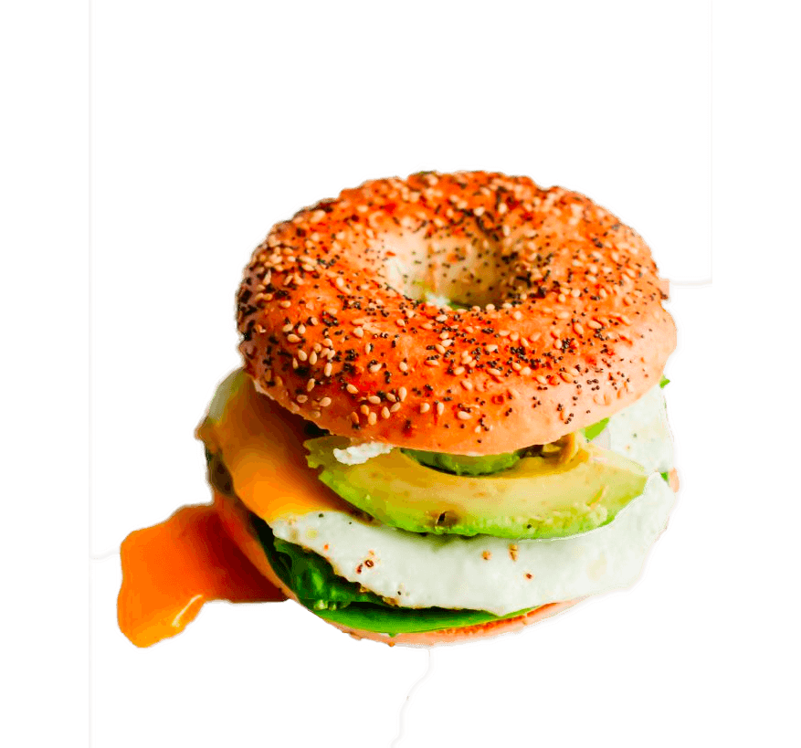

- Turkey
- Ham
- Veggie
- 3 Cheese
- Vegetarian
- Simple Sandwich
All Bagel Lunch Sandwiches come with: cream cheese, lettuce, tomato, cucumber, onion and sprouts.
- Breakfast Bagel Sandwiches
- Egg and Cheeese
- Ham and Egg
- Ham and Cheese
- Egg and Turkey
- Any 3 Combo
Served all day, on your choice of bagel. All Breakfast Bagel Sandwiches comes with Butter. Choices for "Cheese": Cheddar or Swiss.
